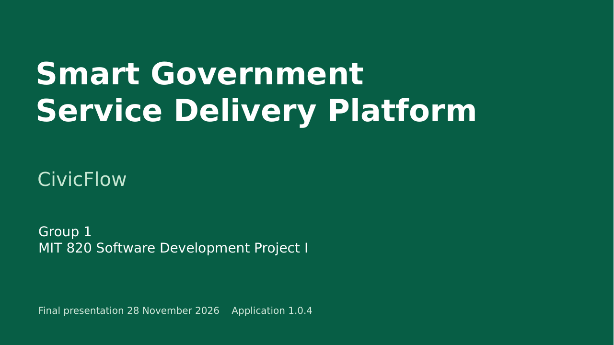

Project defence presentation
Editable PowerPoint and PDF slides.

Speaker guide and demonstration run sheet.
Final presentation is 28 November 2026. The deck describes application 1.0.4 and the recorded test evidence. Complete independent live access and the actual contribution and supervisor records before defence.